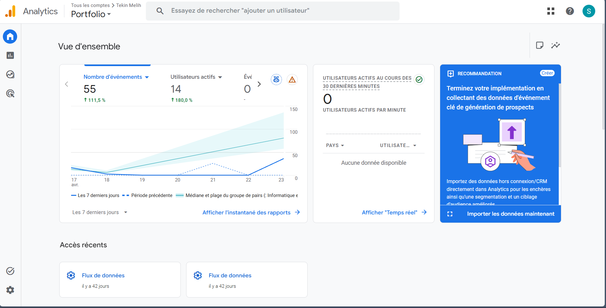
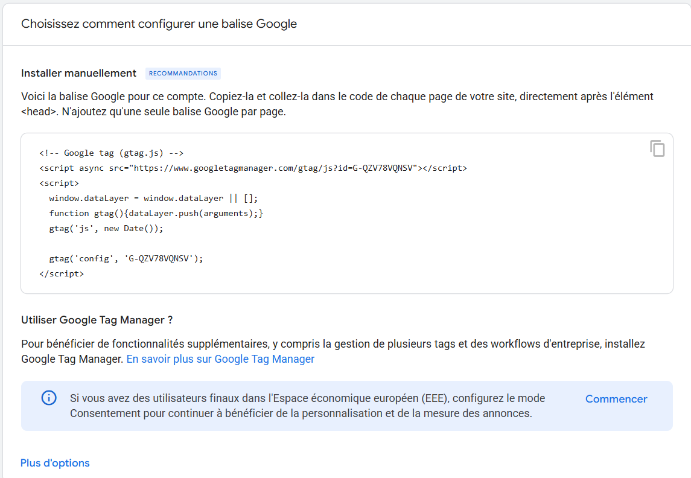
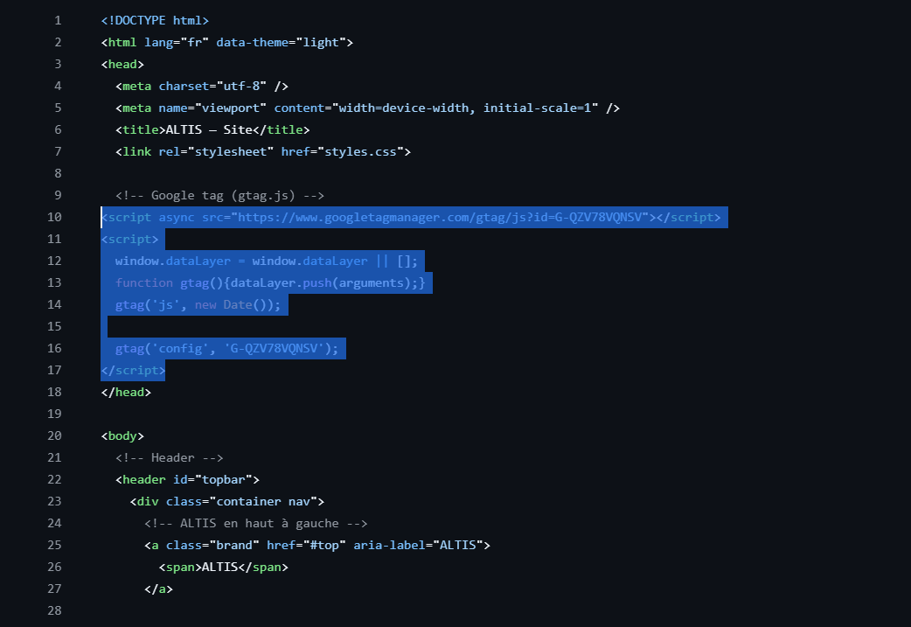

Publication et référencement d’un site web
Réalisation professionnelle
Publication et référencement d’un site web dans le cadre d’un projet hackathon réalisé en formation.
Compétence mise en œuvre
C11 - Référencement des services en ligne de l’organisation et mesure de leur visibilité.
Contexte
Dans le cadre de ma formation en BTS SIO à l’EFREI, nous avons été amenés à créer un site web pour une entreprise fictive dans le cadre d’un projet hackathon.
L’objectif était de rendre le service proposé par l’entreprise accessible au public et d’analyser sa visibilité sur Internet. Pour cela, nous avons utilisé GitHub Pages pour héberger le site, ainsi que Google Analytics afin de suivre les statistiques de fréquentation.
Démarche suivie
1. Publication du site web
Dans un premier temps, nous avons développé un site vitrine présentant l’activité de l’entreprise et ses principales caractéristiques en HTML, CSS et JavaScript.
Ensuite, nous avons mis le site en ligne grâce à GitHub Pages. Cette solution permet de publier rapidement un site statique et de le rendre accessible depuis n’importe quel navigateur.
- Création d’un repository sur GitHub.
- Ajout des fichiers du site.
- Activation de GitHub Pages.
- Obtention d’une URL publique.
2. Mesure de la visibilité
Google Analytics permet d’analyser plusieurs indicateurs utiles pour mesurer la visibilité du site :
- le trafic global du site ;
- le nombre de visiteurs uniques ;
- les pages les plus consultées ;
- les sources de trafic, comme l’accès direct, les réseaux sociaux ou les moteurs de recherche.
Ces données permettent d’évaluer la performance du site et de mieux comprendre son niveau de visibilité.
3. Ajout de Google Analytics
Pour utiliser Google Analytics,
il faut créer un compte,
configurer une propriété pour le site,
puis ajouter le code JavaScript fourni
dans la balise <head>
du fichier HTML.
<head>
<!-- Code Google Analytics à ajouter ici -->
</head>
4. Référencement du site
Pour améliorer la visibilité du site,
nous avons mis en place plusieurs actions simples liées au SEO :
ajout d’un titre adapté,
d’une description,
et structuration du contenu
avec des balises de titres
comme <h1>
et <h2>.
Nous avons également partagé le site via une page LinkedIn créée pour l’entreprise afin d’augmenter sa présence en ligne et d’attirer davantage de visiteurs.
Technologies utilisées
Captures et preuves
Les captures ci-dessous montrent la mise en place du suivi de visibilité avec Google Analytics ainsi que l’intégration de la balise dans le code HTML du site.

Vue d’ensemble Google Analytics

Balise Google Analytics à installer

Ajout de la balise Google Analytics dans le head du site
Conclusion
Cette réalisation m’a permis de comprendre les étapes nécessaires à la publication d’un site web, mais aussi l’importance du référencement et de la mesure de visibilité.
J’ai pu utiliser GitHub Pages pour rendre un site accessible en ligne, puis Google Analytics pour suivre son trafic et analyser les données de fréquentation.